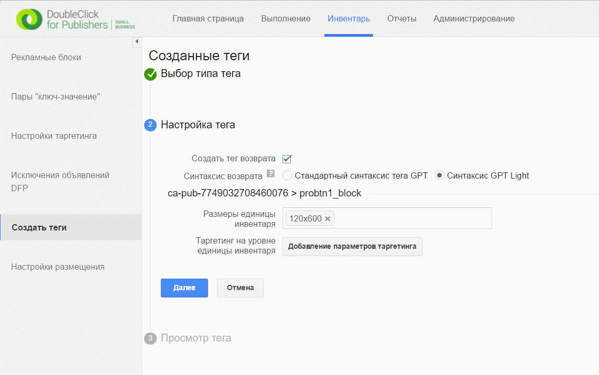

Using passback code¶
There is opportunity in button to use passback code, which would be added at page in case button disabled (when admin.probtn.com settings request return then button state is off).
In particular at editing app we can add at field Passback Code HTML code, which would be added at page (if passback code is pure JS code, when e need to put it inside <script></script>).
In field Passback Code Selector possible to set DOM path, where passback code would be added. By default used #probtn_passback

Exmaple of using DFP passback code¶
You can find description of how to get passback code by this link - https://support.google.com/dfp_sb/answer/2811375?hl=ru
In particular, in the inventory in create tags section, we choose to create a passback tag
and after it we get nessesary passback code

Example of passback code:¶
<div data-glade data-ad-unit-path="/55807997/probtn1" height="600" width="120"></div>
<script async='async' src='https://securepubads.g.doubleclick.net/static/glade.js'></script>